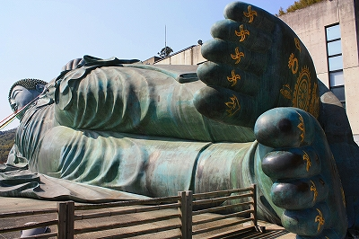

珍寺的篠栗霊場巡り
1番 南蔵院 その2
篠栗霊場総本山の南蔵院、巨大不動明王にのけぞった後、七福神トンネルを抜ける。
トンネルを抜けるとそこは南蔵院の新しく増設されたエリア。
修験道の開祖、役小角像の後ろに見えるドリアンのようなモノには後ほどみっちり触れますのでしばしお待ちを。
旅館のロビーのようなお土産コーナーには大勢の人が押し寄せていた。
九州でこれだけ人が集まるお寺ってどのくらいあるのだろう。というほどの混みよう。
納骨堂にある涅槃像。
階段を上って屋外に出ると…
ハイ、お待たせしました。
南蔵院の名物、巨大涅槃像でございます。
完成は平成7年。前回の訪問は出来たばっかりだったんですねえ。
それから十余年。
私はそれなりに年をとったが寝釈迦さんは相変わらずのほほ〜んとしている。
全長は41メートル。電車2両分ほどということになるのかな。長いねー。
巨大な涅槃像は日本ではレアケースだが東南アジア、特にタイやミャンマーあたりではメジャーな存在だ。
この寺のワールドワイドな姿勢が見て取れる。
で、胎内に入ることが出来る。
台座の内部がお砂踏み霊場になっていて、小さな観音像が並んでいたりする。
で、台座の部分から胎内へ。
胎内は複雑な形状の階段があり、ミャンマーから贈られた仏舎利が祀られている。
巨大涅槃像の胎内巡り、というのは実は相当珍しい。強豪寝釈迦がひしめくタイやミャンマーのメジャーリーグにおいてもその存在は稀だ。
ラストは諸々パネル展示。開眼の様子は写真で見るだけでも壮観だ。
↓寝釈迦さんの前にいるツブツブ。コレぜ〜んぶお坊さんです。
そして超お宝発見！
ぺ・ヨンジュンとチェ・ジウの冬ソナコンビからのサインとメッセージがっ！
南蔵院涅槃像建立10周年祝賀のメッセージだそうです。さあ、在九冬ソナファンの皆様、南像院に行くべしっ！拝むべし！
てなわけで胎内巡りを終えて外に出るとそこは足の裏。

これも寝釈迦さんの特徴である足の裏の紋様。お釈迦様は偏平足なんですね。
紋様レリーフのわずかな出っ張りに一円玉が乗せられている。凄い。
一方、こちらは俵投げおみくじ。
羽根突きのシャトルみたいな俵を真ん中の3つの枡めがけて投げるというもの。
3つある枡の真ん中には大大吉、左右に大吉とある。枡に入ったらお土産がもらえるそうで。
何がもらえるかは判りません。だって一個も入らなかったから…
そんなこんなで南蔵院参拝終了。次なる霊場に向かうとしよう。
省略したが、この南蔵院の境内に3番31番60番45番などの札所もある。札所の中に札所があるという入れ子構造が当たり前に思えるほど大きな寺院だ、ということです。
南蔵院の第二駐車場のとなりに2番松ヶ瀬阿弥陀堂があり、その向かいには大きな花観音と呼ばれる観音像をかたどった植え込みが。
対面の山中から見た涅槃像。やっぱ大きいね。
谷あいに寝そべる寝釈迦さん。最早篠栗の町のシンボルといえよう。
全国にあまたある大仏や大観音と違って上から目線じゃないから人気があるのかな〜、と思ってしまった。
次の霊場にトライアル！
珍寺的篠栗霊場巡りTOPへ
珍寺大道場 HOME